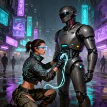
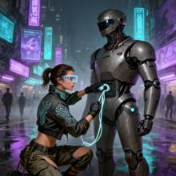
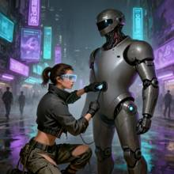
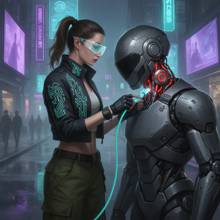
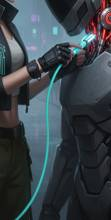

Action — Create a painting: Game character design, a female cyberpunk-style hac
Create a painting: Game character design, a female cyberpunk-style hacker plugs a data cable into the neck interface of a robot guard, with a neon city street in the background.

Judge — Direct
- FAILAction - Contact Interaction — The image depicts a robot holding a data cable that is connected to a device on the female character's neck. This is the reverse of the action specified in the prompt, which states that the female hacker should be plugging the cable into the robot guard's neck interface.
- PASSStyle — The image is rendered in a digital painting style. The overall aesthetic, featuring a futuristic city with prominent neon signs, a highly advanced robot, and a human with technological accessories, is consistent with the cyberpunk style.
- PASSCompound - Feature Matching — The image features a female character with a high-tech collar, consistent with a 'female cyberpunk-style hacker'. There is a large, metallic humanoid robot that matches the description of a 'robot guard'. The background depicts a 'neon city street' with wet pavement, glowing signs, and tall buildings.
Judge — Continuum
- PASSAction - Contact Interaction — A female character is shown holding a glowing data cable and is in the process of inserting the end of it into the neck area of a robot. The robot's neck has exposed red wires and a port where the cable is being directed.
- PASSStyle — The image is rendered in a digital painting style. The overall aesthetic is cyberpunk, characterized by the futuristic robot, the female character's attire with a glowing visor and circuit-patterned jacket, and the dark, rainy city environment illuminated by glowing neon signs.
- PASSCompound - Feature Matching — The image contains a female character who fits the cyberpunk-hacker aesthetic with her glowing visor, circuit-patterned jacket, and fingerless gloves. Beside her is a humanoid robot with a metallic body, consistent with a robot guard. The background depicts a city street at night, with wet pavement reflecting the light from numerous neon signs and digital billboards.
What the agent did
Thinking
We need create image. Need always flux2-dev generate/edit. No size. Need likely generate painting, game character design, female cyberpunk hacker plugs data cable into neck interface of robot guard, neon city street background. Need inspect after generation, perhaps image itself visible in tool result? We need reason. Let's generate detailed prompt visual only. Maybe 1024x1024 default. Could use 1024 maybe user didn't specify. Need mark best early. Generate.
Step 1 — `generate_image`
{
"model": "flux2-dev",
"prompt": "A richly detailed painterly game character-design illustration: in the foreground, a stylish female cyberpunk hacker crouches beside a tall humanoid robot guard and plugs a glowing fiber-optic data cable into an open access port on the side of the robot's neck. The hacker wears a cropped high-collared jacket with circuit-like embroidery, tactical gloves, asymmetrical cargo pants, and translucent augmented-reality glasses; one hand holds the cable plug, the other steadies the robot. The robot guard is bulky but sleek, matte gunmetal armor, luminous status lights, exposed neck mechanisms, and a deactivated visor. Behind them stretches a rain-slick neon city street at night with crowded signs, holographic advertisements, purple and cyan reflections, distant pedestrians, and atmospheric haze. Dramatic cinematic composition, dynamic close mid-shot, strong silhouettes, glossy paint texture, concept-art quality, coherent anatomy, highly detailed."
}Result img_0

Thinking
Need inspect: Looks very good but cable is in robot chest, not neck interface. User specifically neck interface. Need edit targeted. Must mark best? Since mostly good but core action wrong, not submit yet perhaps mark anyway "as soon as image willing to submit" but not willing due core mismatch. Could edit cable connection to neck. Need perhaps move endpoint. edit_image, delta only. "Move glowing data cable endpoint from robot chest panel to exposed access port on side of robot neck; make hacker's upper hand visibly insert plug into neck interface, preserving composition." The current image has cable attached at chest panel, her hand at port. Need edit. Maybe robot's neck already exposed red wires but no distinct port. We can edit cable route upward. Must use model flux2-dev.
Step 2 — `edit_image`
{
"image": "img_0",
"model": "flux2-dev",
"prompt": "Move the glowing data-cable connection from the robot's chest panel to an open access port on the exposed side of the robot's neck. Reposition the hacker's raised hand so she is visibly inserting the cable plug into that neck interface, with the cable arcing naturally upward from her other hand."
}Result img_1

Thinking
It didn't move connection. Need maybe because edit not enough. We should possibly inpaint precise region? Could use segmentation / mask. Need target cable+chest port and replace with maybe cable to neck. But hand positions may need structural. Could edit with more direct targeted. Maybe use inpaint over robot chest and hacker hands with desired contents including cable connected to neck, while preserving rest. Since it's localized, edit_image should default but failed once. Could try another seed or reformulate. We cannot set seed per policy? User/benchmark says do not set seed. We can edit again without seed, randomized. Need maybe "remove chest access panel and glowing cable connection; cover chest with smooth armor. The glowing cable now runs from hacker's hand upward and is plugged into small circular port on side of robot's exposed neck." This describes two changes in one edit? It's essentially one action. Could call edit_image. However multiple distinct changes maybe one action. Alternatively use inpaint with mask for robot neck, chest, hacker hands. Yet inpaint region can generate all. Better maybe targeted edit. Need perhaps mark best? Current still not match core. Not mark. Try another edit, perhaps use references img_0 to preserve composition. Prompt should say preserve visual qualities from reference? "Keep the composition, character designs, background, painterly style, and lighting unchanged. Replace the chest port and cable endpoint with a smooth armored chest. Show the glowing cable rising to and plugged into a small circular port on the left side of robot's exposed neck, with hacker's top hand holding plug there." The user says edit prompt delta, but references to preserve. We can be concrete. Let's do.
Step 3 — `edit_image`
{
"image": "img_1",
"model": "flux2-dev",
"prompt": "Replace the robot's chest access panel and glowing cable endpoint with smooth armored plating. Route the glowing cable upward so its plug is seated in a small circular access port on the left side of the robot's exposed neck, with the hacker's upper gloved hand holding the plug at the neck interface. Preserve the character designs, poses, painterly style, lighting, and neon street background from the reference.",
"references": [
"img_1"
]
}Result img_2

Thinking
It removed glowing cable and kept chest connection, worse. Could mark earlier? The original had cyberpunk design but wrong neck. The current still not. Need fix. Could perhaps edit robot/hacker pose to connect neck. Since structural change. Maybe inpaint a broad region. Need pixel exact outside? Not necessary but edit_image leaking. Could use segment/inpaint. We can create mask for robot upper torso + hacker arms? Then inpaint desired contents. But inpaint can be difficult and might generate weird anatomy. Alternative regenerate with prompt emphasizing neck; but benchmark says don't restart if mostly works, yet core detail. Could use inpaint on region covering hacker upper body/robot neck and chest. Need mask. Could use segment text maybe "the hacker and robot" would include full bodies, too broad. We can make mask manually? No tool to draw mask, but can segment regions. Could use segment for "the robot guard" and maybe invert? We need region around robot chest/neck and woman's arms, not whole. segment_points maybe points on robot neck, chest, woman's hands/arms. But masks separate? segment_points selects one target based clicks, not arbitrary union unless multiple points all same object, but could cover region weirdly. segment_boxes with boxes around neck+chest+arms merges object masks, not rectangular region; likely may include both. inpaint could fill robot/hacker contents but preserve outside. Yet prompt must describe contents region. Could use mask from segment("the female hacker and robot guard") maybe includes full. Too large and may alter. edit_image is acceptable but failed. Could target more explicitly: maybe current cable looks like black from hand to chest and round black port. Need neck interface perhaps if cable from neck to hand? Maybe easier to create glowing cable that starts at neck and trails down to her hand, no need move hand all way up? User says hacker plugs a data cable into neck interface; likely hand should be near neck. We need pose. Could edit whole composition? Generate again with closer composition and explicit cable at neck. But current visual quality good. Maybe another targeted edit from img_0 with stronger prompt. Use image img_0 and perhaps ask only to change hand/arm/cable; references. It previously ignored because neck too high and hand shorter? Could adjust pose by raising arm. Need "Raise the hacker's extended right arm toward neck, bend elbow; plug in neck." But robot is tall; her hand at chest, neck about y=160, hand y=380. Moving arm up significantly perhaps inpainting large region. Could generate from scratch with a composition that fits: hacker standing on platform or crouched near robot? To plug neck she could stand on crate/raised knee. Prompt explicitly: "standing on a raised maintenance platform, reaching eye-level with neck". But user says female hacker plugs cable into neck interface. Could be robot kneeling? The initial had robot standing and hacker crouching, making impossible. We can regenerate with better pose, maybe robot guard kneeling/deactivated so its neck accessible. That's allowed maybe not edit widening. But should not restart if mostly works; however core central action is wrong. A new generation might deliver. We have plenty. Need mark best maybe current img_0 is better than img_2. We could mark img_0 as best current because core cable at chest though overall. But user asked neck. Maybe later. Need perhaps call mark_best img_0 as fallback now. Since it is the best of three (img_1 same, img_2 worse). Mark img_0.
Step 4 — `mark_best`
{
"image": "img_0",
"reason": "Strongest overall cyberpunk game-character illustration so far, though the cable still connects at the chest rather than the requested neck interface."
}Thinking
Need improve. Could inpaint broad region on img_0. Let's inspect maybe original dimensions 768x768? Tool output appears 768x768. Need segment. We can use segment maybe robot neck + hacker hand? We can get mask by segment description "the glowing cable, chest access panel, and hacker's hands" but inpainting only these, not enough to reroute to neck because region not cover neck. Need include neck. Could create mask from robot via segment("robot guard head, exposed neck, chest panel") maybe includes whole robot? PCS semantic could segment relevant objects maybe. Need maybe segment text "the robot guard" gets entire robot, too broad but inpainting entire robot might preserve hacker? Prompt would describe robot with neck interface and cable; but inpaint cannot use context perhaps can generate. It preserves hacker mostly, but cable in hacker's hands outside mask could be cut. Could include woman too. Whole subjects region ~most foreground, but background preserved. Inpaint prompt could describe "A female hacker ... plugging cable into neck of robot guard" in entire central region. Since inpaint FLUX.1 Fill can reconstruct. But quality maybe less than flux2-dev and painting style could drift. Better to use edit_image with full image but maybe strong prompt. Could regenerate with composition where action is easy. Let's consider use generate_image anew. Since benchmark policy says not restart if mostly works, but this is central mismatch; perhaps appropriate. Generate prompt maybe robot guard kneels to one knee, leaning down, female hacker stands close, cable visibly plugged into neck. This solves reach. "A kneeling robot guard's exposed neck interface at woman's shoulder height." The rest same. Could create 768. Use no seed. Let's generate.
Step 5 — `generate_image`
{
"model": "flux2-dev",
"prompt": "Painterly futuristic game character-design illustration in a vertical cinematic close-up: a female cyberpunk hacker stands close beside a kneeling humanoid robot guard, whose head is lowered so the exposed data interface on the side of its neck is at her eye level. She is actively plugging a glowing cyan fiber-optic data cable into that neck port, one gloved hand holding the connector against the open socket and the other guiding the cable. She has a ponytail, translucent augmented-reality visor glasses, a cropped high-collared black jacket with luminous circuit embroidery, tactical gloves, and asymmetrical olive cargo pants. The robot guard is sleek but bulky gunmetal armor, deactivated dark visor, exposed red-and-silver neck mechanisms, and visible circular access socket in its neck. Behind them, a rain-soaked neon city street at night with purple and cyan signs, holographic advertisements, wet reflective pavement, distant pedestrians, and atmospheric haze. Strong character silhouettes, dramatic rim lighting, glossy painterly brushwork, detailed concept-art quality, coherent hands and anatomy."
}Result img_3

Thinking
This looks excellent and actually cable into side neck port. Need inspect details maybe hands. At full scale looks perhaps glowing connector at neck; there is one hand. Need maybe crop to verify action. Use inspect_region on cable/neck.
Step 6 — `inspect_region`
{
"image": "img_3",
"padding": 0.18,
"roi": "the glowing cable connector inserted into the robot's neck port"
}Result img_4

Thinking
This is perfect. Need mark best img_3. Maybe could stop. Need final answer perhaps indicate completed. But must mark before stop.
Step 7 — `mark_best`
{
"image": "img_3",
"reason": "Best match to the prompt: the female cyberpunk hacker is visibly inserting a glowing data cable into the kneeling robot guard's exposed neck interface, with a detailed neon city street behind them."
}Thinking
Need final maybe "Created..." and image presumably tool output already shown. We need maybe user asked create painting; final can concise. Ensure marked image returned if cut. We can say done.
Model
Created the cyberpunk game-character painting, with the hacker visibly plugging a glowing data cable into the robot guard’s exposed neck interface against a neon city street.